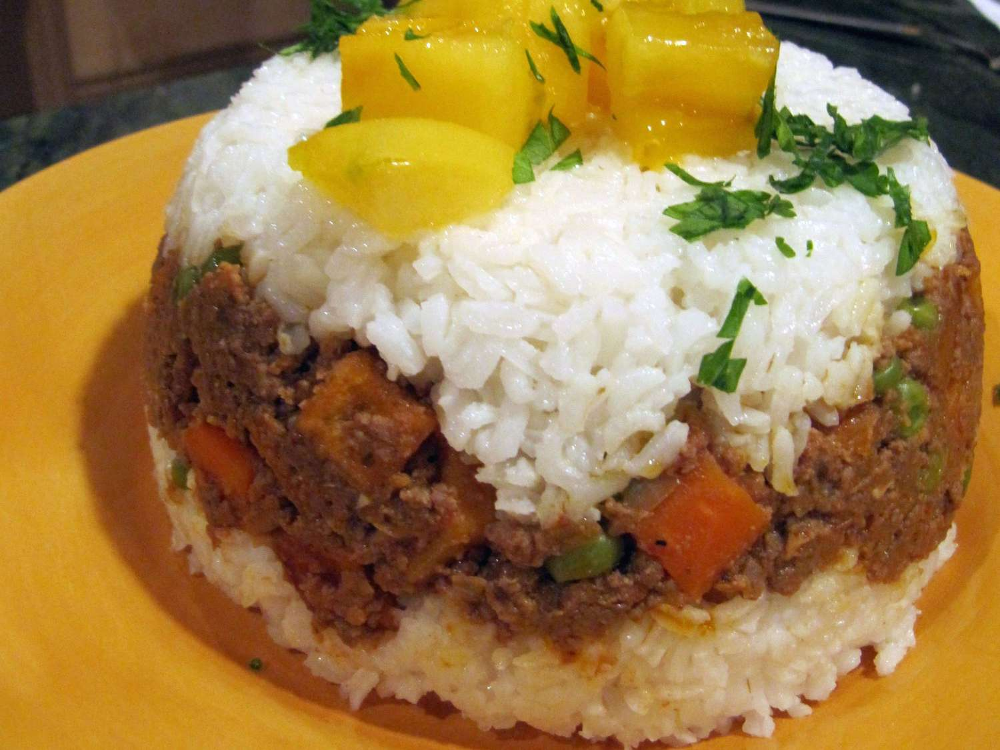

Pirinac i meso

A fun Peruvian dish that looks cool and is always a hit with the kids! Seasoned meat is the surprise center to the rice on top. Makes great leftovers!
- 2 cups uncooked white rice
- 4 cups water
- 1 egg
- 1 potato
- 1 cup vegetable oil for frying
- 1 cup oil
- 1 large onion
Steps
- Bring the rice and 4 cups of water to a boil in a saucepan over high heat. Reduce heat to medium-low, cover, and simmer until the rice is tender, and the liquid has been absorbed, 20 to 25 minutes.
-
Place the egg into a saucepan, and cover with water by 1 inch. Cover the saucepan and bring the water to a boil over high heat. Once the water is boiling, remove from the heat and let the egg stand in the hot water for 15 minutes. Pour out the hot water, then cool the egg under cold running water in the sink. Peel once cold. Chop the egg and set aside in a small bowl.
- Heat 1 cup of vegetable oil in a deep-fryer or large saucepan to 350 degrees F (175 degrees C). Deep fry the potato cubes until golden brown, about 5 minutes; drain on paper towels, and set aside.
- Place tomatoes and 1/2 cup of water in a blender, and puree until tomatoes are liquefied (peel and seed first, if desired).
Nazad